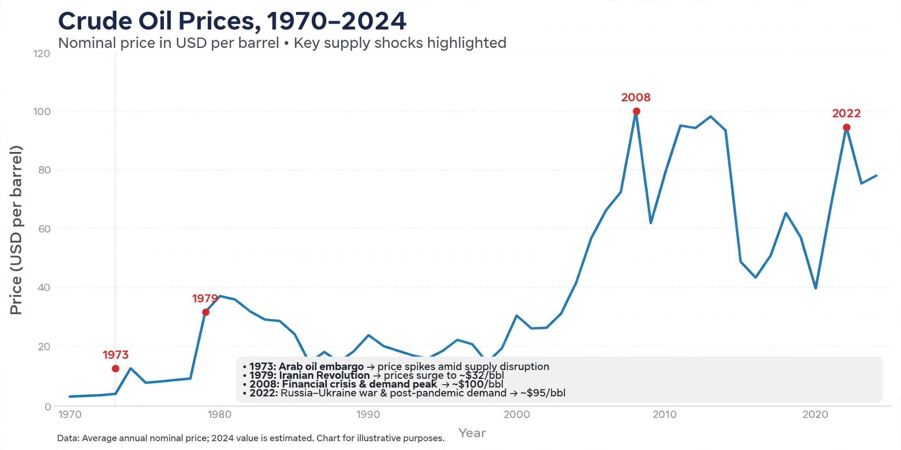

Price of oil

The price of oil is the spot and futures price of benchmark crude oils, principally Brent (North Sea) and West Texas Intermediate (WTI), quoted in US dollars per barrel. Because oil underpins transport, petrochemicals and much of industry, its price is one of the most closely watched numbers in the world economy. See also Petroleum.
Prices are set by supply and demand but swing sharply with wars, recessions, OPEC decisions and expectations, with consequences for inflation and politics everywhere.
Benchmarks and markets
Brent, priced off North Sea production and traded in London, is the reference for most internationally traded crude; WTI, delivered at Cushing, Oklahoma, anchors the Americas. Other grades trade at differentials reflecting quality (light/sweet versus heavy/sour) and transport costs. Most trading takes place in futures markets, where prices reflect expectations months and years ahead as well as today's physical balance.
OPEC, and since 2016 the wider 'OPEC+' grouping including Russia, attempts to manage supply through production quotas; spare capacity held by Saudi Arabia is a key buffer watched by traders.
History of shocks
For most of the 20th century prices were low and stable under company or posted-price systems. The 1973 oil crisis quadrupled prices, and the 1979 Iranian Revolution doubled them again, ushering in efficiency drives and new non-OPEC supply. Prices collapsed in 1986 and again in 1998, then climbed through the 2000s to a peak near US$147 per barrel in July 2008 before crashing in the financial crisis.
The US shale boom after 2010 added flexible new supply and helped crash prices in 2014–16. In April 2020, amid the COVID-19 demand collapse, WTI futures briefly traded below zero. Prices spiked again in 2022 after Russia's invasion of Ukraine, then eased.
Why it matters
Oil price rises act like a tax on importing economies, feeding inflation and slowing growth; falls benefit consumers but can bankrupt producers and oil-state budgets, and by making fuel cheap can slow the shift to {L('Renewable_energy')}. Understanding the price's volatility is central to {L('Energy_policy')}.
See also: Petroleum · 1973 oil crisis · Energy policy · OPEC · Fossil fuel